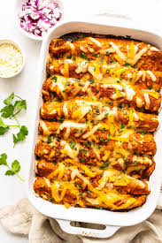

|  |
Chicken Enchiladas
Description : Enchiladas are a popular Mexican dish that bursts with flavor and comfort in every bite. Made by rolling soft corn tortillas around a variety of fillings such as seasoned meat, beans, cheese, or vegetables, and then baking them in a savory sauce, enchiladas offer a delightful combination of textures and tastes. The rich, tangy enchilada sauce, often made with tomatoes, chilies, and spices, perfectly complements the hearty fillings. Topped with melted cheese and fresh garnishes like cilantro, sour cream, and avocado, enchiladas are a versatile and satisfying meal that can be enjoyed for any occasion, bringing a taste of Mexico to your table.
|